ADEMÁS del papel que ha desempeñado en la vida cotidiana, el vidrio ha tenido una trascendental participación en el desarrollo de la tecnología y de nuestra concepción de la naturaleza. Gracias a él sabemos cómo son los microorganismos, a través del microscopio; cómo es el Universo, con el uso de los telescopios; cuál es la naturaleza del átomo y el dinamismo de una célula viva. La variedad de usos que se le ha encontrado solamente está limitada por la capacidad y el ingenio del hombre. Su versatilidad es difícilmente sustituible, por lo que su estudio se vuelve más interesante.
Básicamente, el principio de fabricación del vidrio ha permanecido invariable desde sus comienzos, pues las principales materias primas y las temperaturas de fusión no han sido modificadas. Sin embargo, las técnicas se han transformado para conseguir un proceso de producción más acelerado, y los investigadores han elaborado diferentes compuestos para combinarlos con el material bruto y así variar las propiedades físicas y químicas, de manera que sea posible disponer de una amplia gama de vidrios para diversas aplicaciones.
El vidrio se hace en un reactor de fusión, en donde se calienta una mezcla que casi siempre consiste en arena silícea (arcillas) y óxidos metálicos secos pulverizados o granulados. En el proceso de la fusión (paso de sólido a líquido) se forma un líquido viscoso y la masa se hace transparente y homogénea a temperaturas mayores a 1 000ºC. Al sacarlo del reactor, el vidrio adquiere una rigidez que permite darle forma y manipularlo. Controlando la temperatura de enfriamiento se evita la desvitrificación o cristalización.
En la antigüedad la fusión se hacía en moldes de arena hechos en casa, como se ve en la figura 8, pero para la industrialización de este proceso fue necesario construir grandes hornos (figura 9), donde además de las materias primas se podían añadir trozos de vidrio viejo de desecho.
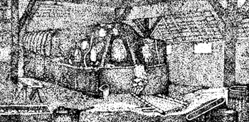
Figura 8. Horno de fusión casero antiguo (siglo XVII).
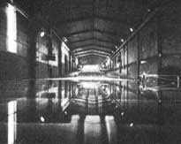
Figura 9. Horno tanque.
Durante los tiempos primitivos de la industria del vidrio, las únicas materias primas que se utilizaban en su fabricación eran las arcillas. Hoy en día se emplean distintas mezclas para obtener diferentes tipos. Por ejemplo, los bloques de vidrio se fabrican en moldes con una mezcla de arena de sílice, cal y sosa, y se les añade dolomita, arcilla de aluminio y productos para el refinado. En la actualidad muchos materiales desempeñan un papel importante, pero las arcillas siguen siendo fundamentales.
Aunque la palabra puede resultarnos conocida, es posible que no sepamos que la arcilla es el producto del envejecimiento geológico de la superficie de la Tierra, y que como esta degeneración es continua y se produce en todas partes, es un material terroso muy abundante en la naturaleza. De hecho, para el cultivador, el minero o el constructor de carreteras resulta un estorbo. En nuestro país tenemos numerosas arcillas. Los yacimientos en la República se encuentran distribuidos en el territorio correspondiente a 10 de los estados que forman la confederación política del país. Las localidades donde se han encontrado se ilustran en el mapa correspondiente (figura 10). En éste se observa que en Chihuahua, Zacatecas, Aguascalientes, Jalisco, Guanajuato, Querétaro, Hidalgo, Tlaxcala, Puebla y Guerrero se encuentran las zonas importantes. A menudo estos territorios están relacionados con regiones de mineralización, como las que corresponden a los estados de Guanajuato, Hidalgo y Querétaro.
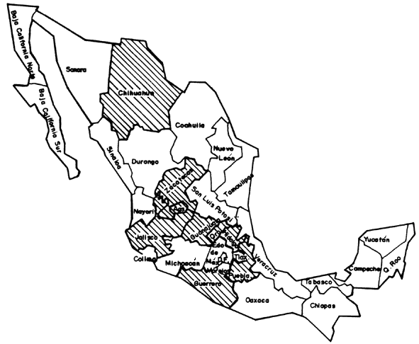
Figura 10. Ubicación de los principales yacimientos de arcillas silíceas en la República Mexicana
Las rocas ígneas primarias que dieron lugar a las arcillas fueron, entre otras, granitos, pegmatitas y feldespatos. El envejecimiento de estas rocas primarias fue producido por la acción mecánica del agua, el viento, los glaciares y los movimientos terrestres, combinados con la acción química del agua y del bióxido de carbono a altas temperaturas. Hoy en día las mismas fuerzas naturales siguen produciendo arcilla, formándose así más cantidad de la que el hombre puede utilizar.
La arcilla es un material engañosamente sencillo. No tiene la obstinada dureza de la piedra, ni la fibra temperamental de la madera, ni la solidez del metal, pero tiene una fragilidad y una inconstancia que parecen pedir un cuidado especial. Es blanda, dócil, plástica, maleable, sin veta ni dirección. Clasificarla es una tarea difícil y conduce a diferentes resultados, dependiendo de la característica del material que se tome como referencia. La podemos ordenar desde un punto de vista geológico, mineralógico o de acuerdo con su uso.
Una clasificación geológica es la más conveniente en el caso de la arcilla, pues puede ser una guía preliminar útil de las materias primas empleadas en la industria del vidrio (figura 11). Asimismo pueden dividirse en dos grandes grupos: las primarias y las secundarias. Las arcillas primarias, también conocidas como arcillas residuales, son las que se han formado en el lugar de sus rocas madres y no han sido transportadas por el agua, el viento o el glaciar. Al no haber movimiento, casi no hay oportunidad de que las mezclas de otras procedencias alteren su composición, por lo que tienden a ser relativamente puras y libres de materiales no arcillosos. Son valoradas por su limpieza, su blancura, su suavidad, su bajo costo y su dificultad para encontrarlas. Las arcillas secundarias son aquellas que han sido desplazadas del lugar donde fueron formadas. Son mucho más comunes, menos puras, pues tienen material procedente de distintas fuentes, y su composición varía ampliamente. Estos datos son particularmente importantes para las personas que van a utilizar estos materiales, ya que las condiciones de trabajo se alteran de manera notable. Las arcillas que se encuentran esencialmente puras requieren un tratamiento mínimo, mientras que las otras tienen que tratarse a profundidad antes de ser utilizadas en la industria.
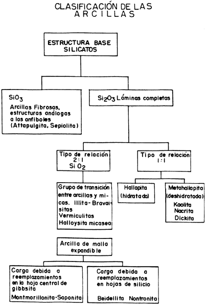
Figura 11. Diagrama de flujo de la clasificación de las arcillas.
Quizá te estés preguntando por qué le damos tanta importancia a las arcillas, si éste es un libro acerca del vidrio. Lo que sucede es que queremos enseñarte y convencerte de que la arcilla es como tierra, como arena, y que de ella se obtienen los vidrios. Cuesta trabajo imaginarlo, ¿verdad? Piensa en la sorpresa que se llevó el hombre primitivo cuando lo descubrió. Puso a calentar tierra y ésta se empezó a poner dura hasta que se transformó en un vidrio. Suena como magia. Hoy sabemos que a medida que la temperatura de tratamiento de la arcilla aumenta más allá del rojo vivo, se produce un endurecimiento, seguido de una compactación y finalmente de una transformación de la arcilla en vidrio. Durante la vitrificación se produce una considerable contracción, debida a la disminución del tamaño de las partículas y a una reestructuración de las moléculas dentro de la matriz vítrea. Pero, ¿de qué están formadas las arcillas que les permite hacer todo eso? Las arcillas son silicoaluminatos complejos. Un silicoaluminato es un compuesto hecho con silicio y aluminio, que se forma cuando la sílice modifica su superficie por la interacción con iones aluminato, intercambiando iones Si(OH)-4 por iones Al(OH)-4, como se ilustra en la figura 12. Se pueden intercambiar unos por otros porque son muy parecidos entre sí. El Al(OH)-4 tiene una carga negativa y cuatro grupos OH, igual que el Si(OH)-4. Además, el silicio y el aluminio son de un tamaño similar. Con el tiempo estos compuestos reaccionan y forman sales solubles con los iones alcalinos (Na, Li, y K) y alcalinotérreos (Be, Mg y Ca), cambiando así la estructura de los silicoaluminatos originales. El aluminio puede estar rodeado por 4 o 6 átomos de oxígeno, y puede tener carga +3 o +4. Imaginemos un silicato donde uno de los átomos de Si+4 está sustituido por un ion Al+3.
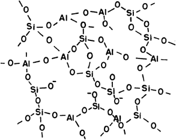
Figura 12. Estructura del silicoaluminato en una arcilla.
Como la carga global tiene que ser la misma y el silicio tiene cuatro mientras que el aluminio tiene tres, se une un K+1 o un Li+1 y resuelve el problema. En la figura 13 aparece un dibujo de la estructura de las arcillas con y sin metales. En la figura 13(a) vemos que hay dos tipos diferentes de capas. En la parte de abajo encontramos una capa de silicio, en medio una de aluminio y a continuación otra de silicio, con sus respectivos oxígenos cada una, por supuesto. Es claro que el aluminio cambió la forma de la arcilla. En la figura 13(b) la situación es similar, salvo que en ésta se indica la posición que toman los átomos de potasio (K). Si seguimos buscando diferencias, veremos que en la arcilla que carece de metales (figura 13(a)) aparecen moléculas de agua (H2O) entre capas de silicio. Por eso se dice que todos estos minerales tienen la propiedad de absorber agua, lo que también contribuye a que las estructuras sean más anchas porque, como puedes ver, la de la figura 13(a) mide entre 9.6 y 21.4 Å, dependiendo de la cantidad de agua que haya absorbido, mientras que la de la figura 13(b) mide 10 Å. Estos cambios en la estructura de la arcilla son la base de su naturaleza caprichosa.
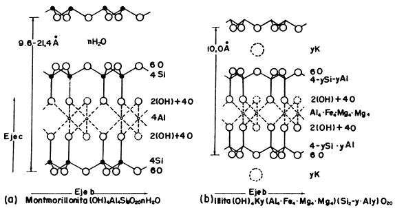
Figura 13. Estructura cristalina de arcillas. a) Sin metales alcalinos (montmorillonita). b) Con metales alcalinos y alcalinotérreos (illita).
En la sílice, la unidad estructural fundamental es un tetraedro de SiO4, es decir, un átomo de silicio rodeado siempre por cuatro átomos de oxígeno (figura 14). Las fuerzas que mantienen unidos a estos átomos comprenden enlaces iónicos y covalentes, lo cual provoca que la fuerza del enlace sea muy grande. Si pensamos en tetraedros de sílice juntos, unos rodeando a otros, tendríamos una combinación de tetraedros de sílice (con sus respectivos oxígenos) orientados al azar. En un cristal como el de la figura 15(a) los átomos siguen un patrón estricto de orientación que se repite n veces, siempre de la misma manera. En un vidrio, los enlaces Si-O-Si no tienen una orientación determinada (figura 15 (b)); la distancia de separación entre los átomos de Si y O no es homogénea, las unidades tetraédricas no se repiten con regularidad y el compuesto está desordenado. A esta última se le conoce como sílice amorfa, mientras que a la ordenada se le conoce como sílice cristalina, y ambas se utilizan en la fabricación del vidrio. El cuarzo (figura 16), es un ejemplo de sílice cristalina muy empleada en esta manufactura.
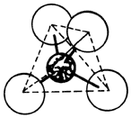
Figura 14. Tetraedro de silicio rodeado de cuatro átomos de oxígeno.
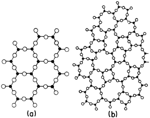
Figura 15. Representación gráfica de las diferencias estructurales entre un cristal(a) y un vidro (b).
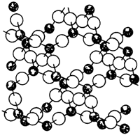
Figura 16. Estructura cristalina regular de cuarzo.
Con las arcillas se hacen los vidrios, y como existe una gran variedad, el vidrio que obtengamos dependerá de la arcilla que escojamos, razón por la cual se necesita conocer muy bien las materias primas. Esto lo saben los señores vidrieros, y por eso han aprendido que la caolinita (figura 17) es el grupo de minerales de arcilla más sencillo, su estructura básica se compone de átomos de oxígeno ordenados de tal manera que dan lugar a capas alternadas de huecos tetraédricos, que se ocupan por átomos de silicio y aluminio, y huecos octaédricos, ocupados por átomos de aluminio, magnesio, hierro y cinc.
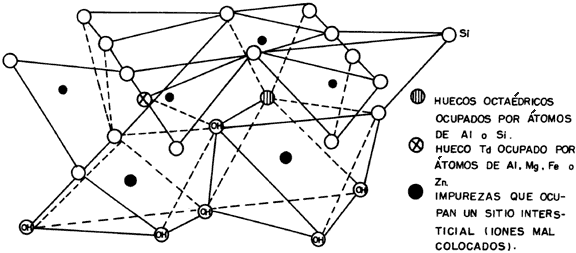
Figura 17. Estructura de la caolinita.
También hay impurezas que ocupan sitios intersticiales, o dicho de otra manera, tienen iones que están mal acomodados. El efecto de las impurezas depende de su naturaleza, de la proporción en que se encuentran, del tamaño y de la forma de los granos de la arcilla, y de las condiciones de reacción, incluyendo la temperatura alcanzada, la duración del calentamiento y los efectos de algunas otras sustancias presentes. Cuando estas impurezas son compuestos de hierro, por ejemplo, el color de la arcilla cambia, y aparecen eflorescencias de colores en la superficie del material seco y manchas negras o grises. También se modifican las propiedades refractarias. El óxido férrico es altamente refractario cuando se encuentra en una atmósfera oxidante; en una reductora actúa como fundente. La diferencia entre las dos situaciones es que en la primera el hierro pierde electrones, mientras que en la segunda los gana. Esta disparidad puede cambiar radicalmente las propiedades de la materia prima necesaria para hacer un vidrio. Las impurezas nos pueden ayudar a su manufactura, lo importante es saberlas escoger y manejar.
Desde que el hombre primitivo descubrió el vidrio, su fabricación ha cambiado poco, y ha dependido en gran medida de la infraestructura disponible para la fusión de las materias primas. Antiguamente se utilizaban crisoles con capacidad de pocas toneladas (hoy en día se siguen usando para elaborar vidrios especiales). En las grandes fábricas modernas se utiliza el llamado horno tanque, que consiste en un gran tanque cerrado, hecho con los mejores materiales refractarios. El combustible (gas o petróleo) se quema dentro del tanque, produce enormes llamas que pasan sobre la superficie de vidrio fundido y sobre las materias primas flotantes aún no fundidas. Los hornos tanque más usuales son continuos, lo que quiere decir que las materias primas que se introducen por el extremo de fusión salen con la misma rapidez por el lado opuesto en forma de vidrio fundido, para después pasar a las máquinas que le dan forma. Existen hornos continuos muy grandes, con una capacidad total de 450 toneladas y una producción diaria de vidrio de 250 toneladas. Las altas temperaturas con las que trabajan estos hornos (alrededor de 1 500ºC) requieren sistemas de caldeo regenerativos para recuperar parte del calor.
Cuando el vidrio sale del tanque de fusión se enfría y se endurece rápidamente. En los pocos segundos que permanece a una temperatura entre el rojo amarillo y el rojo naranja se trabaja de muchas formas para darle diferentes aspectos. Se puede prensar, soplar, estirar y laminar. El vidrio frío puede volverse a calentar y trabajarse repetidas veces con la misma facilidad aplicando el mismo método. Es importante evitar que el vidrio caliente y blando permanezca a la intemperie demasiado tiempo, porque se puede cristalizar.
En la producción a gran escala, inmediatamente después de que se le ha dado forma a un artículo de vidrio, éste es transportado hasta un horno de recocido continuo, en el cual se vuelve a calentar a la temperatura apropiada. Con esto se evitan tensiones dentro del material vítreo. Posteriormente se somete a un enfriamiento lento y controlado. Después de salir del horno de cocido, cada artículo es inspeccionado, embalado y, si es necesario, se somete a operaciones de acabado. En la figura 18 se muestra un diagrama del proceso de fabricación del vidrio. La materia prima se pone en el tanque de fusión. Una vez fundida se le da forma para después recocerla. Se puede ver que la temperatura de recocido es relativamente baja comparada con la de fusión, y que el vidrio roto de desecho se puede volver a utilizar cuantas veces se desee.
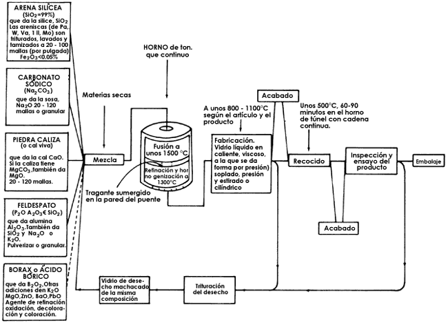
Figura 18. Diagrama para la fabricación de vidrio.
Es importante destacar que el proceso de fabricación es prácticamente el mismo para todos los tipos, y lo que cambia de un ejemplar a otro es el material. Todos ellos tienen en mayor o menor proporción átomos de silicio, que es uno de los elementos de la tabla periódica que más se parece al carbono. Esto resulta interesante si pensamos que el carbono es la base fundamental de la vida en nuestro planeta. Si son tan parecidos, ¿por qué no existe vida en la Tierra basada en la química del silicio?, y ¿por qué no podemos utilizar el carbono para fabricar vidrio? La razón radica en la gran facilidad que tiene el silicio para formar compuestos con el oxígeno, evitando con esto las largas cadenas que serían equivalentes a las del carbono, y que son importantes en la química de la vida. Es precisamente esta afinidad con el oxígeno lo que lo hace útil e indispensable en la formación del vidrio.

|

|

|

|